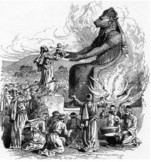

It seems the gods of Canaan and likewise YHWH had a taste for blood. Reference to sacrifices:
By neighboring peoples to their gods: Burnt offerings of children are documented to Moloch (Deut 12:31, 2Kings 23:10), the sacrifice of the first-born by Moab (2Kings 3:27)

By Israelites to YHWH: Josiah burns human bones to YHWH (1Kings 13:1-2, 2Chron 34:1-5), David sacrifices two of Saul’s sons and five of his grandsons to YHWH (2Sam 21:1, 8-14), a town and people are made a burnt offering to YHWH (Deut 13:13-19), YHWH kills all the first-born of Egypt (Ex 13:11-16), YHWH claims all the first-born of Israel as his (Ex 13:2), YHWH hands men over to be ‘fuel for the fire’ (Ez 21:33-37), YHWH demands Isaac be sacrificed (Gen 22:2), a city-full of people is offered as a sacrifice to YHWH (Josh 6:21), a thief is burned to death (Josh 7:15), Jephthah sacrifices his daughter as a burnt offering to YHWH (Judges 11:29-40), every devoted thing - both of man and beast - shall be put to death (Lev 27:28), Moses orders the murder of Midianite women and children (Num 31:25-40), YHWH gives statutes that the first-born are to ‘pass through the fire’ (Ez 20:25-26)
By Israelites to other gods: Ahaz burns his son as an offering (2Kings 16:2-3), Manassah rebuilds altars to Baal and worships foreign gods, as had Ahab (2Kings 21:1-6), Israelites sacrifice their children to Moloch (Ez 16:20-21, 23:37, Is 57:5, Jer 7:31, 19:5, 32:35, Lev 20:2, Ps 106:37-41)
Also note that in all of these legends, the only important character is the male lead; the usually nameless wives and children are mere ciphers: Job’s original family, Lot’s wife, Lot’s daughter, Jephtha’s daughter, King Mesha’s son, Ahaz’s son, Isaac, the Innocents. Human sacrifice is disguised as a necessity, blood sacrifice is preferred (hence god’s preference for the offering of Abel), and of course, Jesus, whose sacrifice is memorialized by a daily cannibalistic ritual. ‘Without the shedding of blood, there is no remission’ (Heb 9:13-22).
Indeed, the deaths of Job’s family are mere collateral damage of a wager between YHWH and Satan:
Job 1:12 And the LORD said unto Satan, Behold, all that he hath is in thy power; only upon himself put not forth thine hand. So Satan went forth from the presence of the LORD. 13 And there was a day when his sons and his daughters were eating and drinking wine in their eldest brother's house: 14 And there came a messenger unto Job, and said, The oxen were plowing, and the asses feeding beside them: 15 And the Sabeans fell upon them, and took them away; yea, they have slain the servants with the edge of the sword; and I only am escaped alone to tell thee. 16
While he was yet speaking, there came also another, and said, The fire of God is fallen from heaven, and hath burned up the sheep, and the servants, and consumed them; and I only am escaped alone to tell thee. 17 While he was yet speaking, there came also another, and said, The Chaldeans made out three bands, and fell upon the camels, and have carried them away, yea, and slain the servants with the edge of the sword; and I only am escaped alone to tell thee. 18 While he was yet speaking, there came also another, and said, Thy sons and thy daughters were eating and
drinking wine in their eldest brother's house: 19 And, behold, there came a great wind from the wilderness, and smote the four corners of the house, and it fell upon the young men, and they are dead; and I only am escaped alone to tell thee.
~~~~~~~